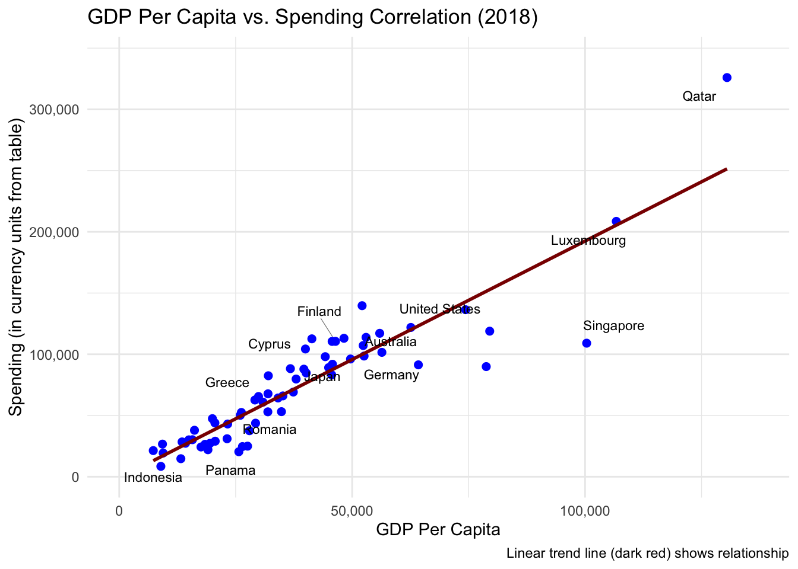
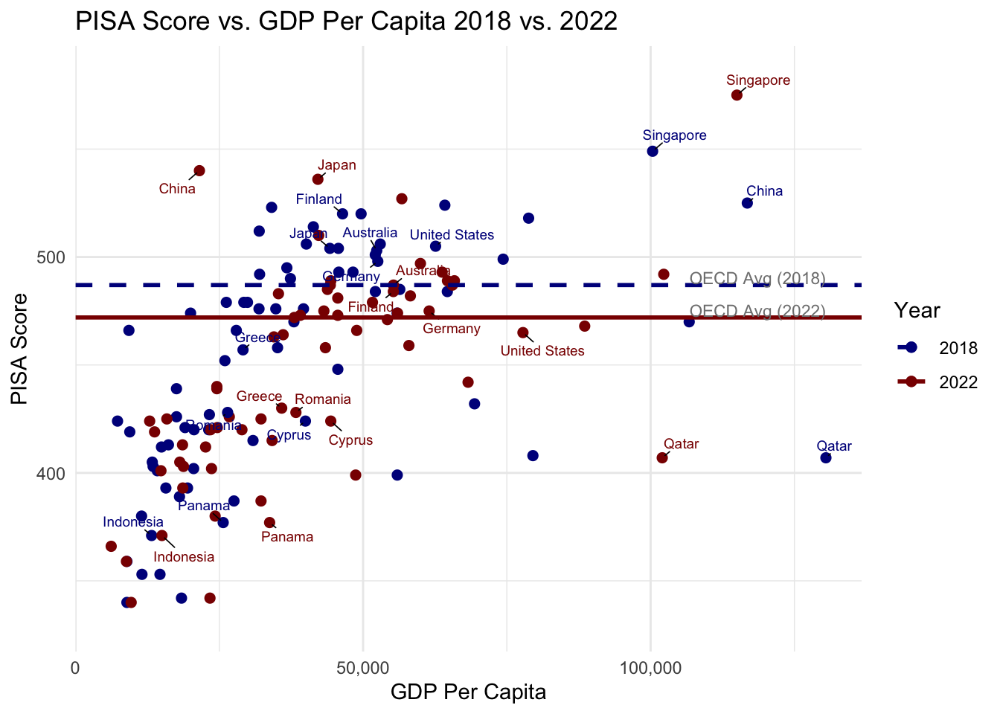
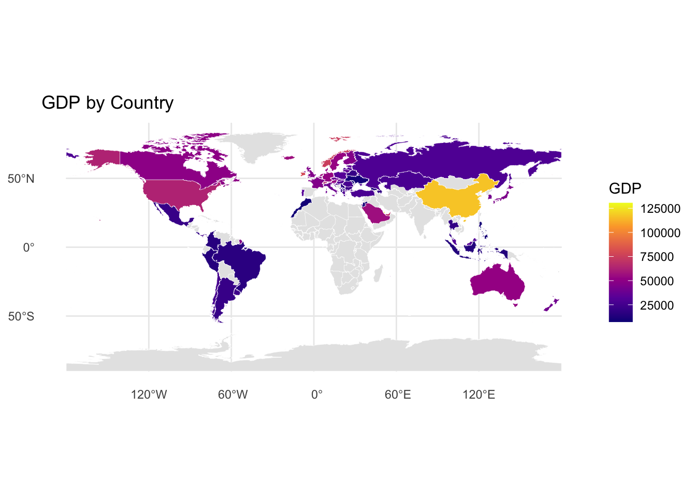
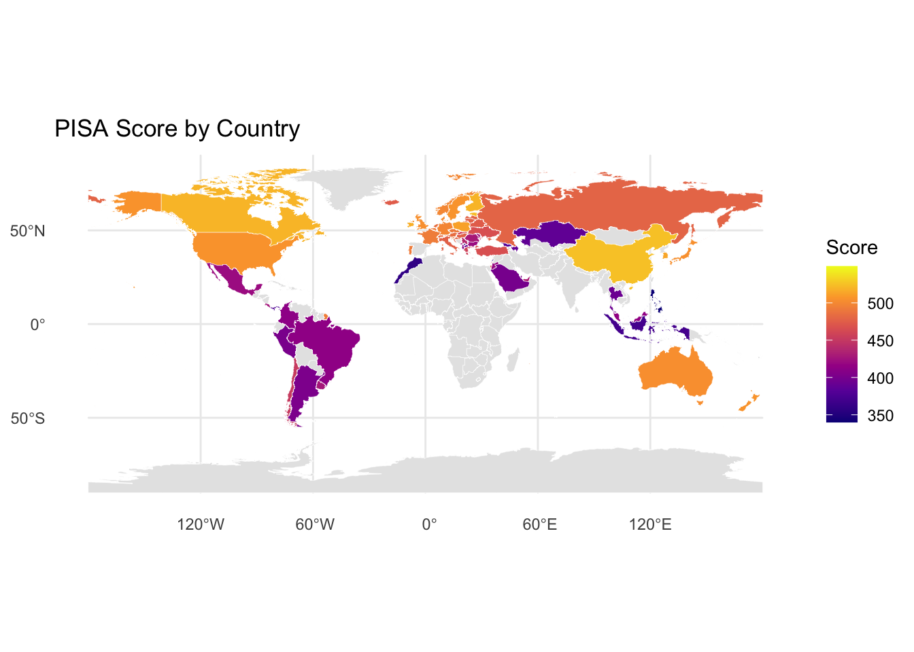

── Conflicts ────────────────────────────────────────── tidyverse_conflicts() ──
✖ dplyr::filter() masks stats::filter()
✖ dplyr::lag() masks stats::lag()
ℹ Use the conflicted package (<http://conflicted.r-lib.org/>) to force all conflicts to become errors
Linking to GEOS 3.13.0, GDAL 3.8.5, PROJ 9.5.1; sf_use_s2() is TRUE
Code
library(rnaturalearth)library(rnaturalearthdata)
Attaching package: 'rnaturalearthdata'
The following object is masked from 'package:rnaturalearth':
countries110
Code
library(patchwork)library(ggrepel)library(vcd)
Loading required package: grid
Code
library(scales) # Required for label_number()
Attaching package: 'scales'
The following object is masked from 'package:purrr':
discard
The following object is masked from 'package:readr':
col_factor
Code
#library(Lock5withR)
Code
# Loading in the PISA datasets:pisa2009 <-read.csv('data/2009_PISA.csv')pisa2012 <-read.csv('data/2012_PISA.csv')pisa2015 <-read.csv('data/2015_PISA.csv')pisa2018 <-read.csv('data/2018_PISA.csv')pisa2022 <-read.csv('data/2022_PISA.csv')participation_list <-list('2009'= pisa2009$X,'2012'= pisa2012$Country,'2015'= pisa2015$X,'2018'= pisa2018$Country,'2022'= pisa2022$Country)all_countries <-unique(unlist(participation_list))
Warning: There were 2 warnings in `mutate()`.
The first warning was:
ℹ In argument: `across(c(`2009`, `2012`, `2015`, `2018`, `2022`), as.numeric)`.
Caused by warning:
! NAs introduced by coercion
ℹ Run `dplyr::last_dplyr_warnings()` to see the 1 remaining warning.
we say that the data is being more bimodal over time
we dont know what is exactly changing; we can say data from higher peak is going to lower peak but we are still unsure af
Code
ggplot(all_scores_long, aes(x = score, y =as.factor(year))) +geom_density_ridges(fill ="blue") +ggtitle("Overall PISA Scores Over Time") +ylab("year")
Picking joint bandwidth of 15.5
Warning: Removed 468 rows containing non-finite outside the scale range
(`stat_density_ridges()`).
change the ordering of the years axis
data is being more bimodal over time
Let’s look closer into these differences by country
Code
all_scores_long |>filter(year >2017) |>filter(!is.na(score)) |>ggplot(aes(x = score, y =fct_reorder2(country, year=="2022", score), color=as.factor(year))) +geom_point(alpha=0.5) +ggtitle("PISA Scores in 2018 vs. 2022") +ylab("") +theme_linedraw()
make a note about the three colors that are appearing
we see that actually the countries whose scores differed greatly were higher performing countries; that’s wack
the change is getting worse
was the decrease from 2018 to 2022 significantly worse? Let’s look at the whole distribution
Code
# Plotting scoresggplot(filter(all_reading_scores_long, country =="OECD average"), aes(year, score)) +geom_point(data =filter(all_reading_scores_long, year >2010), aes(x=year, y=score), position='jitter') +geom_point(size=4, color="red") +labs(x ="Year", y ="OECD Average Reading Scores") +ggtitle("OECD Average Reading Scores from 2012-2022")
Warning: Removed 121 rows containing missing values or values outside the scale range
(`geom_point()`).
Warning: Removed 1 row containing missing values or values outside the scale range
(`geom_point()`).
Code
ggplot(filter(all_math_scores_long, country =="OECD average"), aes(x=year, y=score)) +geom_point(data =filter(all_math_scores_long, year >2010), aes(x=year, y=score), position='jitter') +geom_point(size=4, color="red") +labs(x ="Year", y ="OECD Average Math Scores") +ggtitle("OECD Average Math Scores from 2012-2022")
Warning: Removed 118 rows containing missing values or values outside the scale range
(`geom_point()`).
Removed 1 row containing missing values or values outside the scale range
(`geom_point()`).
Code
ggplot(filter(all_science_scores_long, country =="OECD average"), aes(year, score)) +geom_point(data =filter(all_science_scores_long, year >2010), aes(x=year, y=score), position='jitter') +geom_point(size=4, color="red") +labs(x ="Year", y ="OECD Average Science Scores") +ggtitle("OECD Average Science Scores from 2012-2022")
Warning: Removed 118 rows containing missing values or values outside the scale range
(`geom_point()`).
Removed 1 row containing missing values or values outside the scale range
(`geom_point()`).
Code
# Change the x axis to only show the years we wanna see
Hard to tell. Let’s try to predict 2022
Code
# Reading Predictionsreading_scores_train <- all_reading_scores_long |>filter(year <2020, country =="OECD average")reading_model <-lm(score ~ year, data = reading_scores_train)# Predict for 2022predicted_value <-predict(reading_model, newdata =data.frame(year =2022))print(predicted_value)
1
481.5
Code
# Plot new modelggplot(reading_scores_train, aes(year, score)) +geom_point(data=filter(all_reading_scores_long, country =="OECD average"), aes(year, score)) +geom_point(data=data.frame(year =2022, score = predicted_value), color ="blue", size=3) +geom_abline(intercept =coef(reading_model)[1], slope =coef(reading_model)[2], color ="blue", linewidth =1) +labs(x ="Year", y ="OECD Average Reading Scores") +ggtitle("Predicting 2022 OECD Average Reading Score")
Warning: Removed 1 row containing missing values or values outside the scale range
(`geom_point()`).
Code
# Math Predictionsmath_scores_train <- all_math_scores_long |>filter(year <2020, country =="OECD average")math_model <-lm(score ~ year, data = math_scores_train)# Predict for 2022predicted_value <-predict(math_model, newdata =data.frame(year =2022))print(predicted_value)
1
485.1667
Code
# Plot new modelggplot(math_scores_train, aes(year, score)) +geom_point(data=filter(all_math_scores_long, country =="OECD average"), aes(year, score)) +geom_point(data=data.frame(year =2022, score = predicted_value), color ="blue", size=3) +geom_abline(intercept =coef(math_model)[1], slope =coef(math_model)[2], color ="blue", linewidth =1) +labs(x ="Year", y ="OECD Average Mathematics Scores") +ggtitle("Predicting 2022 OECD Average Mathematics Score")
Warning: Removed 1 row containing missing values or values outside the scale range
(`geom_point()`).
Code
# Science Predictionsscience_scores_train <- all_science_scores_long |>filter(year <2020, country =="OECD average")science_model <-lm(score ~ year, data = science_scores_train)# Predict for 2022predicted_value <-predict(science_model, newdata =data.frame(year =2022))print(predicted_value)
1
480.3333
Code
# Plot new modelggplot(science_scores_train, aes(year, score)) +geom_point(data=filter(all_science_scores_long, country =="OECD average"), aes(year, score)) +geom_point(data=data.frame(year =2022, score = predicted_value), color ="blue", size=3) +geom_abline(intercept =coef(science_model)[1], slope =coef(science_model)[2], color ="blue", linewidth =1) +labs(x ="Year", y ="OECD Average Science Scores") +ggtitle("Predicting 2022 OECD Average Science Score")
Warning: Removed 1 row containing missing values or values outside the scale range
(`geom_point()`).
reading and math scores dropped significantly
science was ok somehow
yes there were only three years so we cant trust this trend too much
but each point was being created by the average of millions of students across the world
we have a lack of time(years) for this data but we dont have a lack of data
3.0.2 Other factors
intro to this section is gonna be: we have now concluded that there is a sig dip from 2018-2022 but we can’t say it’s just bc of covid so lets look at some other factors —> see if there is a correlation between COVID and GDP, COVID and spending
Warning: Removed 1 row containing missing values or values outside the scale range
(`geom_point()`).
Warning: Removed 1 row containing missing values or values outside the scale range
(`geom_text_repel()`).

graph: spendin 2018 - 2022
woah change or no change
change could be bc of gdp if a countru has more money they will spend more on ending
GRAPH TO BE CREATED
GDP vs spending
there is a corr
Code
GDP_precovid<-read.csv('data/2018_GDP.csv')spending_precovid<-read.csv('data/2018_Spending.csv')merged_data <-merge(GDP_precovid, spending_precovid, by ="Country")
Code
#2018# Define the specific countries you want to labeltarget_countries <-c("Qatar", "Macao (China)", "Singapore", "Austria", "Iceland",'Finland')ggplot(merged_data, aes(x = GDP, y = Spending)) +geom_point(color ="blue", size =2) +geom_abline(intercept =0, slope =1, linetype ="dashed", color ="grey50") +geom_smooth(method ="lm", se =FALSE, color ="darkred") +geom_text_repel(# Filter data to only label the target countriesdata = merged_data[merged_data$Country %in% target_countries, ], aes(label = Country), size =3, segment.color ='grey50', segment.size =0.2, box.padding =unit(0.5, "lines"), point.padding =unit(0.5, "lines"),force =2 ) +# Set X-axis limits and format (NO scientific notation)scale_x_continuous(labels =label_number(big.mark =","), # Format to full number with commaslimits =c(0, max(merged_data$GDP) *1.05) # Incorporate the limit here ) +# Set Y-axis limits and format (NO scientific notation)scale_y_continuous(labels =label_number(big.mark =","), # Format to full number with commaslimits =c(0, max(merged_data$Spending) *1.05) # Incorporate the limit here ) +# Labels and Themelabs(title ="GDP vs. Spending Correlation (2018) - Selected Countries Highlighted",x ="GDP (in currency units from table)",y ="Spending (in currency units from table)",caption ="Linear trend line (dark red) shows relationship. Dashed line (grey) is y=x." ) +theme_minimal()
`geom_smooth()` using formula = 'y ~ x'

Code
# dashed is y = x
Code
GDP_postcovid<-read.csv('data/2022_GDP.csv')spending_postcovid<-read.csv('data/2022_Spending.csv')merged_data2 <-merge(GDP_postcovid, spending_postcovid, by ="Country")names(merged_data2)[2] <-"GDP"
Code
# Define the specific countries you want to labeltarget_countries <-c("Qatar", "Macao (China)", "Luxembourg", "Singapore", "Austria", "Iceland", 'Finland')ggplot(merged_data2, aes(x = GDP, y = Spending)) +geom_point(color ="blue", size =2) +geom_abline(intercept =0, slope =1, linetype ="dashed", color ="grey50") +geom_smooth(method ="lm", se =FALSE, color ="darkred") +geom_text_repel(# Filter data to only label the target countriesdata = merged_data2[merged_data2$Country %in% target_countries, ], aes(label = Country), size =3, segment.color ='grey50', segment.size =0.2, box.padding =unit(0.5, "lines"), point.padding =unit(0.5, "lines"),force =2 ) +# Set X-axis limits and format (NO scientific notation)scale_x_continuous(labels =label_number(big.mark =","), # Format to full number with commaslimits =c(0, max(merged_data2$GDP) *1.05) # Incorporate the limit here ) +# Set Y-axis limits and format (NO scientific notation)scale_y_continuous(labels =label_number(big.mark =","), # Format to full number with commaslimits =c(0, max(merged_data2$Spending) *1.05) # Incorporate the limit here ) +# Labels and Themelabs(title ="GDP vs. Spending Correlation (2022) - Selected Countries Highlighted",x ="GDP (in currency units from table)",y ="Spending (in currency units from table)",caption ="Linear trend line (dark red) shows relationship. Dashed line (grey) is y=x." ) +theme_minimal()
`geom_smooth()` using formula = 'y ~ x'
Code
# dashed is y = x
pisa vs gdp -bc gdp and spending are correlated we see the same type of corr so this prove that gdp and spending are correlated
GRAPH TO BE CREATED
we end on how has GDP changed (graph: GDP 2018-2022) - get rid of insane colors - color with red and green–> threshold of the expected slope
GDP will typically increase but the increase that we see here is not as high as the increase that we would typically want to see - largest reason for that is covid
though we can’t say that COVID is the only reason why the education system has changed, a lot of the other factors that affect education outcomes were effected by covid
3.0.3 CASE STUDY: FINLAND
Finland’s transition to distance learning went well, but the effect of switching meant that students no longer had equal access to the resources provided at school and their resources were limited to their homes. Meaning, any difference or inequity of educational support in their home life directly affected their educational performance/outcomes. This can be seen in their cynicism and burnout or whatever rates increasing
Code
data_cynicism <-read.csv("data/cynicism_finland.csv")data_cynicism <- data_cynicism %>%rename(High_school =colnames(data_cynicism)[4], )# Convert data to long format for easier plottingdata_cynicism_long <- data_cynicism %>%pivot_longer(# Select the three school columns for pivotingcols =c(High_school),names_to ="School_Type",values_to ="Percentage" )color_map <-c("High_school"="#6495ED")label_map <-c("Comprehensive"="Comprehensive school grades 8 and 9","High_school"="High school grades 10 and 11","Vocational"="Vocational school")# Create the plotcynicism_plot <-ggplot(data_cynicism_long, aes(x = Year, y = Percentage, color = School_Type)) +# Add the linesgeom_line(linewidth =1) +# Add the points (circles)geom_point(size =3) +# Set the custom colors and labels for the legendscale_color_manual(values = color_map, labels = label_map,name =NULL# Remove legend title ) +# Customize the X-axis (Years)scale_x_continuous(breaks = data_cynicism$Year,# Use the custom labels, noting 2013 and 2017 are single years in this setlabels =c("2007", "2009", "2011", "2013", "2017", "2019", "2021"),expand =expansion(add =c(0.5, 0.5)) ) +# Customize the Y-axis (Percentage) - Adjusted for higher valuesscale_y_continuous(limits =c(0, 40), # Set the y-axis range to accommodate up to 35.5breaks =seq(0, 40, by =5) # Set breaks every 5 units ) +# Add labelslabs(x ="Year",y ="Percentage of students reporting cynicism" ) +# Apply the clean themetheme_minimal() +theme(legend.position ="bottom",axis.title =element_text(size =12, face ="bold"),plot.background =element_rect(fill ="white", color =NA),panel.background =element_rect(fill ="white", color =NA),panel.grid.major =element_line(color ="grey80"),panel.grid.minor =element_blank() )# Display the plotprint(cynicism_plot)
Code
# 2020 vertical line to signify the start of pandemic # some kinda predictive thing to show that predicted value for 2021 is lower than actual to show hella increase in slope
Code
data <-read.csv("data/school_burnout_finland.csv")data_long <- data %>%rename(High_school =colnames(data)[4] )
Code
# Ensure Year is numericdata_long$Year <-as.numeric(data_long$Year)# --- Regression and Prediction Setup ---# 2. Prepare the training data (up to 2019)data_train <-subset(data_long, Year <=2019)# 3. Fit the Linear Regression Modelburnout_model <-lm(High_school ~ Year, data = data_train)# 4. Predict the High_school value for 2021prediction_year <-data.frame(Year =2021)predicted_value <-predict(burnout_model, newdata = prediction_year)# 5. Create data frames for plotting the actual and predicted pointspredicted_point <-data.frame(Year =2021, High_school = predicted_value,Type ="Predicted")# Create a data frame for all actual points, distinguishing the 2021 pointactual_points <- data_longactual_points$Type <-"Actual (2009-2019)"actual_points[actual_points$Year ==2021, "Type"] <-"Actual (2021)"# --- Combined Plot Generation ---ggplot(data = actual_points, aes(x = Year, y = High_school)) +# A. Add the vertical shaded section (starting from 2020)annotate(geom ="rect",xmin =2020, xmax =2022, # Extends past 2021 to cover the right side of the plotymin =-Inf, ymax =Inf,fill ="grey", alpha =0.3 ) +# B. Plot the regression line (fitted on 2009-2019 data)geom_smooth(data = data_train, # Base the line on the training datamethod ="lm", se =FALSE, # Do not display standard errorcolor ="darkgreen", linetype ="dashed", linewidth =1 ) +# C. Plot all actual data pointsgeom_point(aes(color = Type), size =3) +# D. Highlight the predicted 2021 pointgeom_point(data = predicted_point, aes(color = Type), size =4, shape =17# Triangle shape ) +# E. Connect the last actual point (2019) to the predicted 2021 pointgeom_segment(aes(x =2019, y = actual_points[actual_points$Year ==2019, "High_school"], xend =2021, yend = predicted_point[predicted_point$Year ==2021, "High_school"] ),linetype ="dotted",color ="darkgreen",linewidth =1 ) +# 👇 This forces the y-axis to include 0expand_limits(y =0) +# Add labels and theme...labs(title ="Student Burnout (Persistent Sadness) Trends: Finland",subtitle =paste0("Linear Prediction for 2021: ", round(predicted_value, 2), "% (Actual: ", actual_points[actual_points$Year ==2021, "High_school"], "%)" ),y ="Percent of Students (%)",x ="Year" ) +theme_minimal() +# F. Customize colors and legendscale_color_manual(name ="Data Point",values =c("Actual (2009-2019)"="black", "Actual (2021)"="red", "Predicted"="blue" ) ) +# Move the legend to a convenient locationtheme(legend.position ="bottom")
Warning: Use of `actual_points$Year` is discouraged.
ℹ Use `Year` instead.
Warning in geom_segment(aes(x = 2019, y = actual_points[actual_points$Year == : All aesthetics have length 1, but the data has 8 rows.
ℹ Please consider using `annotate()` or provide this layer with data containing
a single row.
`geom_smooth()` using formula = 'y ~ x'
Code
# 2020 vertical line to signify the start of pandemic # some kinda predictive thing to show that predicted value for 2021 is lower than actual to show hella increase in slope
graph shows spike from 2019-2021
The transition to distance learning during the pandemic led to decreased engagement among students, teachers, and principals. This shift significantly increased stress and burnout for educators, with principals feeling the effects of their teachers’ struggles. Teachers found it difficult to compensate for the inconsistent support students received back home. As seen in this teacher burnout graph: GRAPH OF TEACHER BURNOUT TO BE CREATED
Conclusion: The switch to distance learning was well-organized, but it ultimately made fairness in education worse and damaged the conditions needed for students to learn well and feel supported.
3.0.4 CASE STUDY: USA
find a source to talk about whether the transition from diff modalities is trash and just generally how that transition went
Code
#### school modality #https://healthdata.gov/browse?q=school+learning+modalities&sortBy=relevance&pageSize=20df <-read.csv("data/school_modality.csv") |>mutate(Learning_Modality =as.factor(Learning_Modality),Year =as.factor(Year) )counts <- df |>group_by(Year, Learning_Modality) |>summarize(Freq =sum(Count), .groups ="drop")tbl <-xtabs(Freq ~ Year + Learning_Modality, data = counts)colors_theme <-c("#FFB6B9", "#FAE3D9", "#61C0BF")mosaic( tbl,direction =c("v", "h"),highlighting ="Learning_Modality",highlighting_fill = colors_theme,main ="Learning Modality by Year")
from 2020 to 2022, the USA changed learning modality due to pandemic
by the end of 2022, schools were back to hybrid
“K-12 public and independent charter school districts for the 2021-2022 school year and the Fall 2022 semester, from August 2021 – December 2022”
Code
# HIGH SCHOOL STUDENTSusaburnout <-read.csv("data/USA_burnout.csv")# Ensure Year is numericusaburnout$Year <-as.numeric(usaburnout$Year)# --- Regression and Prediction Setup ---# 2. Prepare the training data (up to 2019)usaburnout_train <-subset(usaburnout, Year <=2019)# 3. Fit the Linear Regression Model (using data up to 2019)burnout_model <-lm(High_School ~ Year, data = usaburnout_train)# 4. Predict the High_School value for 2021prediction_year <-data.frame(Year =2021)predicted_value <-predict(burnout_model, newdata = prediction_year)# 5. Create data frames for plotting the actual and predicted pointspredicted_point <-data.frame(Year =2021, High_School = predicted_value,Type ="Predicted")# Create a data frame for all actual points, distinguishing the 2021 pointactual_points <- usaburnoutactual_points$Type <-"Actual (2007-2019)"actual_points[actual_points$Year ==2021, "Type"] <-"Actual (2021)"# --- Combined Plot Generation ---ggplot(data = actual_points, aes(x = Year, y = High_School)) +# A. Add the vertical shaded section (starting from 2020)annotate(geom ="rect",xmin =2020, xmax =2022, # Extends past 2021 to cover the right side of the plotymin =-Inf, ymax =Inf,fill ="grey", alpha =0.3 ) +# B. Plot the regression line (fitted on 2007-2019 data)geom_smooth(data = usaburnout_train, # Base the line on the training datamethod ="lm", se =FALSE, # Do not display standard errorcolor ="darkgreen", linetype ="dashed", linewidth =1 ) +# C. Plot all actual data pointsgeom_point(aes(color = Type), size =3) +# D. Highlight the predicted 2021 pointgeom_point(data = predicted_point, aes(color = Type), size =4, shape =17# Triangle shape ) +# E. Connect the last actual point (2019) to the predicted 2021 pointgeom_segment(aes(x =2019, y = actual_points[actual_points$Year ==2019, "High_School"], xend =2021, yend = predicted_point[predicted_point$Year ==2021, "High_School"] ),linetype ="dotted",color ="darkgreen",linewidth =1 ) +expand_limits(y =0) +labs(title ="Student Burnout (Persistent Sadness) Trends: USA",subtitle =paste0("Linear Prediction for 2021: ", round(predicted_value, 2), "% (Actual: ", actual_points[actual_points$Year ==2021, "High_School"], "%)" ),y ="Percent of Students (%)",x ="Year" ) +theme_minimal() +# F. Customize colors and legendscale_color_manual(name ="Data Point",values =c("Actual (2007-2019)"="black", "Actual (2021)"="red", "Predicted"="blue" ) ) +# Move the legend to a convenient locationtheme(legend.position ="bottom")
Warning: Use of `actual_points$Year` is discouraged.
ℹ Use `Year` instead.
Warning in geom_segment(aes(x = 2019, y = actual_points[actual_points$Year == : All aesthetics have length 1, but the data has 8 rows.
ℹ Please consider using `annotate()` or provide this layer with data containing
a single row.
`geom_smooth()` using formula = 'y ~ x'
Code
# 2020 vertical line to signify the start of pandemic # some kinda predictive thing to show that predicted value for 2021 is lower than actual to show hella increase in slope
check the steady increase from 2019 to 2021 (COVID TIME)
could be because of the stress of pandemic and changes in school modality (refer to mosaic)
3.0.5 Chloropleth, we are not sure if we are adding/using
Code
pisa_gdp2018 =inner_join(read.csv("data/2018_GDP.csv"), read.csv("data/2018_PISA.csv"), by ="Country") %>%select(Country, Score, GDP)name_fix <-c("United States"="United States of America","South Korea"="Korea, Republic of","North Korea"="Korea, Democratic People's Republic of","Iran"="Iran, Islamic Republic of","Vietnam"="Viet Nam","Egypt"="Egypt, Arab Republic of","Czech Republic"="Czechia","Syria"="Syrian Arab Republic","Bolivia"="Bolivia (Plurinational State of)","Brunei Darussalam"="Brunei","Slovak Republic"="Slovakia","Korea"="South Korea","Baku (Azerbaijan)"="Azerbaijan","Moldova"="Moldova", "Kosovo"="Kosovo")pisa_gdp2018$Country <-recode(pisa_gdp2018$Country, !!!name_fix)world <-ne_countries(scale ="medium", returnclass ="sf")world_data <- world %>%left_join(pisa_gdp2018, by =c("name"="Country"))map_gdp <-ggplot(world_data) +geom_sf(aes(fill = GDP), color ="white", size =0.1) +scale_fill_viridis_c(option ="plasma", na.value ="gray90") +labs(title ="GDP by Country",fill ="GDP" ) +theme_minimal()map_score <-ggplot(world_data) +geom_sf(aes(fill = Score), color ="white", size =0.1) +scale_fill_viridis_c(option ="plasma", na.value ="gray90") +labs(title ="PISA Score by Country",fill ="Score" ) +theme_minimal()map_gdp

Code
map_score

Code
pisa_gdp2022 =inner_join(read.csv("data/2022_GDP.csv"), read.csv("data/2022_PISA.csv"), by ="Country") %>%select(Country, Reading.Mean, GDP)name_fix <-c("United States"="United States of America","South Korea"="Korea, Republic of","North Korea"="Korea, Democratic People's Republic of","Iran"="Iran, Islamic Republic of","Vietnam"="Viet Nam","Egypt"="Egypt, Arab Republic of","Czech Republic"="Czechia","Syria"="Syrian Arab Republic","Bolivia"="Bolivia (Plurinational State of)","Brunei Darussalam"="Brunei","Slovak Republic"="Slovakia","Korea"="South Korea","Baku (Azerbaijan)"="Azerbaijan","Moldova"="Moldova", "Kosovo"="Kosovo")pisa_gdp2022$Country <-recode(pisa_gdp2022$Country, !!!name_fix)world <-ne_countries(scale ="medium", returnclass ="sf")world_data <- world %>%left_join(pisa_gdp2022, by =c("name"="Country"))map_gdp <-ggplot(world_data) +geom_sf(aes(fill = GDP), color ="white", size =0.1) +scale_fill_viridis_c(option ="plasma", na.value ="gray90") +labs(title ="GDP by Country",fill ="GDP" ) +theme_minimal()map_score <-ggplot(world_data) +geom_sf(aes(fill = Reading.Mean), color ="white", size =0.1) +scale_fill_viridis_c(option ="plasma", na.value ="gray90") +labs(title ="PISA Score by Country",fill ="Score" ) +theme_minimal()map_gdp